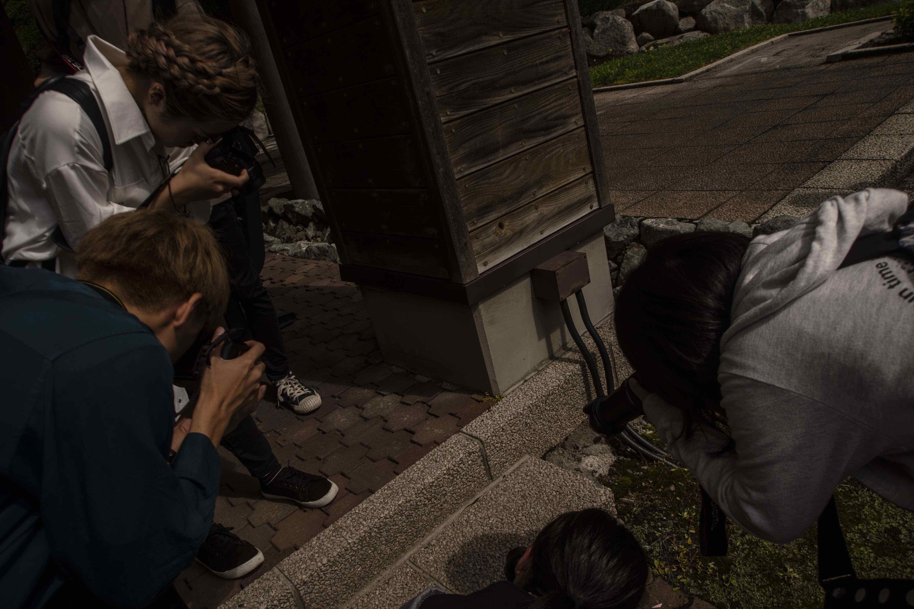

北海道科学大学
写真部
Loading...
北海道科学大学 写真部
Home
(current)
Activities
Contact Us
©Hokkaido University of Science PhotoClub
#北海道科学大学写真部
#ABOUT US
我々は北海道科学大学にて手稲を拠点に活動を展開しております。 写真部では撮影会や写真展を行ったり、大学の諸団体の撮影協力を行っています。

#部員募集中
部員50名でゆるっと活動をしています。一眼レフがなくても大丈夫です。 写真部では新入部員を募集しています。 部に興味があればメールにてご連絡ください。
Tweets by HITphotoclub